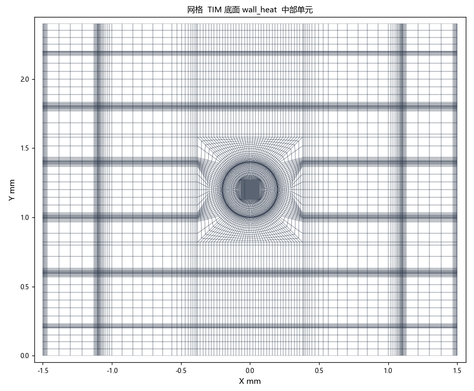
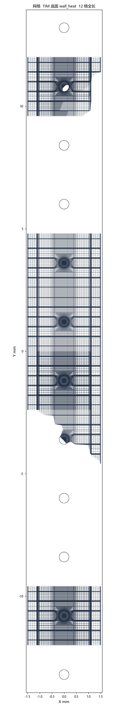
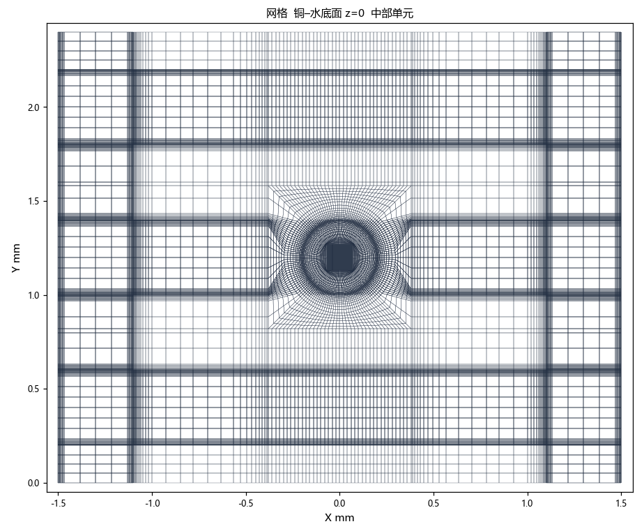
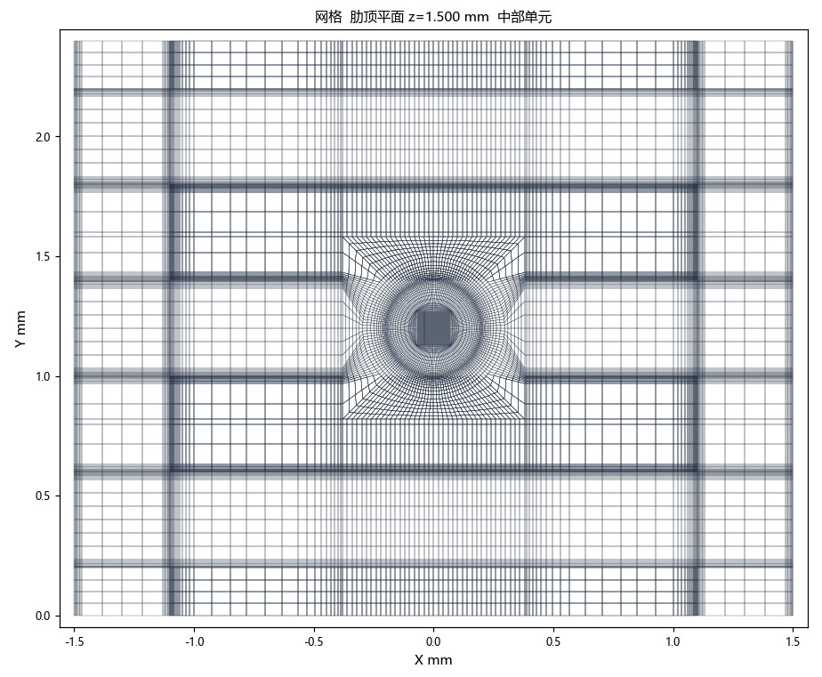
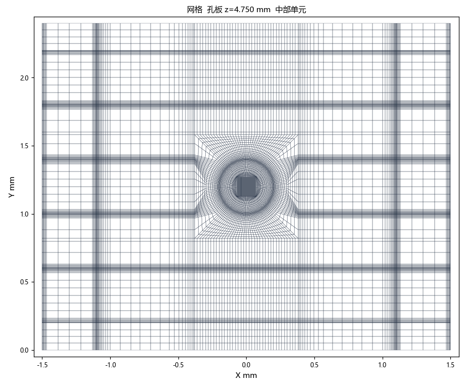
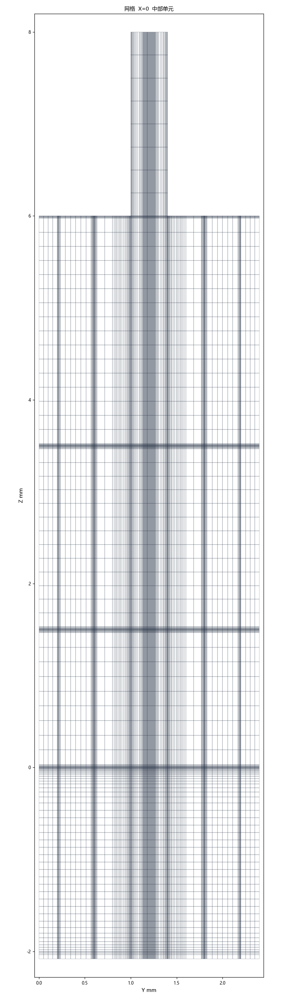
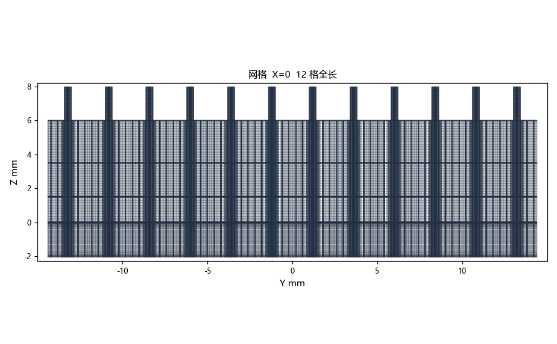
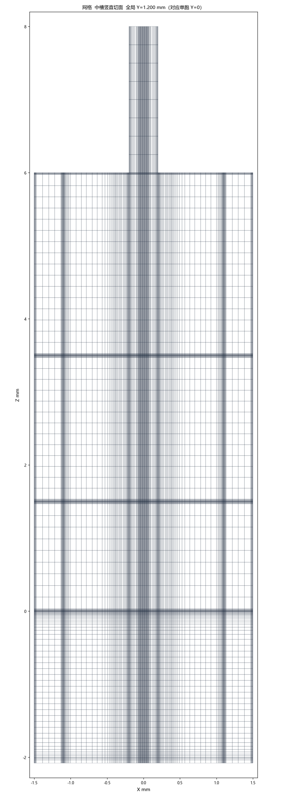
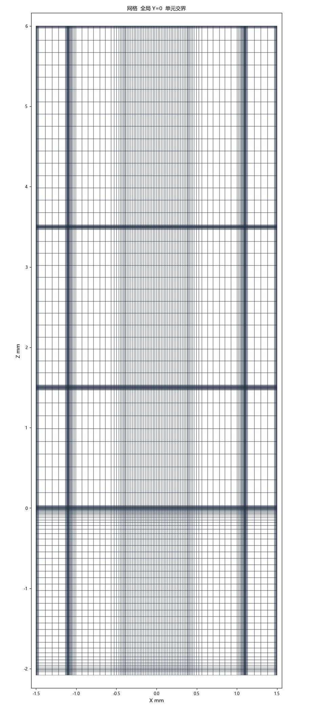
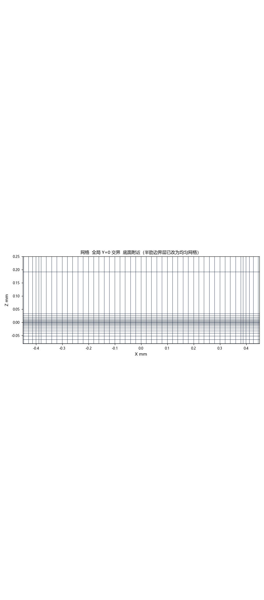

logs/fluent_12y_report_i300.log 的面积加权、质量加权和面质量流量。云图从同一 cas/dat 切出，着色用邻接单元温度，所以云图上的 TIM 底比面温度低约 1 K。不是单胞 iter 380（TIM 底 341.38529 K，ΔP 1087.09 Pa）。热流云图、总压差、GCI、y+ 这场没有导出。1. 边界与收敛
| 量 | iter 300 |
|---|---|
| 场 | uc01b_cht_less_12y_i300.cas.h5 / .dat.h5 |
| 阵列 | 沿 Y 拼接 12 个单孔单元。单孔 D=0.40 mm。进口是 inlet_jet_01 … inlet_jet_12，每孔设定 1.225×10⁻⁴ kg/s。两颗 die 共 216 孔，这条带是其中沿 Y 的 12 孔 |
| 网格 | mesh/uc01b_cht_less_12y.msh。12,679,440 + 14,441,328 + 884,736 = 28,005,504 HEXA。孔外过渡保留 less 网格，交界处半肋的边界层改成 4 层 0.05 mm 均匀网格。水侧边界层首层 2.5 μm、7 层。单元之间 ifl / icu / itm 为 interface |
| 施加 q'' | 579282 W/m²（57.928 W/cm²），打印值 579282。12 格足迹功率 50.04996 W。按 216 孔折到两 die 仍是 900.899 W |
| ṁ | 每孔设定 1.225×10⁻⁴ kg/s。面积分：12 孔入口合计 0.00147002 kg/s，两个 Y 出口合计 0.00147002 kg/s（出口比入口 +0.00019%） |
| 入口 / 出口 | 入口 313.15 K。压力出口只有 outlet_y_front 和 outlet_y_back，表压 0，回流 313.15 K。return_slot 和固体侧 return_slot:096 都是壁面，热流 0。Y 向固体端面 wall_y_front / wall_y_back 绝热。X 向为对称 |
| 求解 | SST k-ω，能量，共轭，coupled pseudo-transient。单精度 3d -t4 -gpgpu=1。GPU 只承担耦合 AMG，能量和固体在 CPU。iter 300 写盘时仍是一阶：压力 standard，动量 / k / ω / 温度均为一阶迎风。 |
| 残差 | 3.3711e-07 4.6391e-07 4.6784e-07 8.4844e-07 5.8266e-08 8.1003e-06 1.0913e-06。收敛检查当时是关掉的，所以没有在判据满足时停。iter 300 时连续性约 3×10⁻⁷，能量约 6×10⁻⁸ |
| 静压 | 12 个入口面积加权的算术平均 1103.0355 Pa。两端入口约 1093 Pa，中间约 1109 Pa。两个出口面积加权静压约为 0。ΔP 取这个平均 |
| 回流 | iter 300 写盘前，两个压力出口各有约 2.3% 面积回流（236 个面） |
| 入口 | 静压 |
|---|---|
| inlet_jet_01 | 1093.4869 Pa |
| inlet_jet_02 | 1098.4526 Pa |
| inlet_jet_03 | 1103.7972 Pa |
| inlet_jet_04 | 1105.6416 Pa |
| inlet_jet_05 | 1107.8195 Pa |
| inlet_jet_06 | 1109.0380 Pa |
| inlet_jet_07 | 1109.0115 Pa |
| inlet_jet_08 | 1107.8528 Pa |
| inlet_jet_09 | 1105.5902 Pa |
| inlet_jet_10 | 1103.7860 Pa |
| inlet_jet_11 | 1098.4671 Pa |
| inlet_jet_12 | 1093.4826 Pa |
| 平均 | 1103.0355 Pa |
2. 温度
TIM 底 wall_heat 面积加权 342.20375 K（69.05 °C）。69.05 °C = 342.20375 − 273.15。面值 342.09656–342.33212 K。
| 面 | iter 300 |
|---|---|
TIM 底 wall_heat | 面积加权 342.20375 K；面值 342.09656–342.33212 K。云图着色是邻接单元 340.66–340.90 K |
| TIM 中面，z=−2.036 mm | 337.17–340.90 K |
TIM–Cu wall_tim_cu | 面积加权 336.94850 K。切面 317.94–337.41 K |
| 铜座中面，z=−1.028 mm | 317.94–337.06 K |
铜–水整个界面 wall_cu_fluid | 面积加权 326.77230 K（53.62 °C） |
| 铜–水底面 z=0（固体） | 317.94–337.06 K |
| Y 出口 | 面积加权净 321.60808 K；质量加权净 321.59094 K。front / back 质量加权见流量节 |
| 入口 | 313.14999 K。入口 1 的面积加权速度 0.98278 m/s |
| 出口温升 / 能量温升 | 质量加权 8.441 K / 8.147 K = 1.0361。面积加权净温升 8.458 K |


3. 热阻
R(T_TIM−T_in) = (342.20375 − 313.15) / 900.899 = 0.03225 K/W。除数是两 die、216 孔的功率，用来和单胞报告的 0.031341 K/W 对照。这条 12 格带自己的功率是 50.04996 W，对应的温升热阻是 0.5805 K/W，口径不同，不拿去和 0.03 K/W 的封装目标比。
CFD 的 TIM 底已经含 TIM2、铜和对流。下面的 R_c-in、R_j-in 仍把设计假设里的 R_TIM2、R_wall、R_pkg 叠在对流项上，只作对照，不和上一行的 R(T_TIM−T_in) 相加。R_pkg 给出的是封装平均结温，不是芯片几何中心的热点。
| 定义 | 按两 die 900.899 W |
|---|---|
| R(T_TIM−T_in) | 0.03225 K/W |
| R_conv = (T_cu−water − 313.15) / 900.899 | 0.01512 K/W |
| R_c-in = R_TIM2(0.004–0.008) + R_wall(0.003392) + R_conv | 0.02251–0.02651 K/W |
| R_j-in = R_c-in + R_pkg(0.008–0.012) | 0.03051–0.03851 K/W。封装平均结温约 67.5–74.7 °C，不是芯片中心最高温度 |
| q''/(T_TIM−T_in) | 1.994e+04 W/(m²·K)。不是湿面局部对流系数 |
| q''/(T_cu−water−T_in) | 4.252e+04 W/(m²·K)。同一施加 q''，不是局部对流系数 |
质量加权能量比 1.0361。Re_D=597.3 < 2000，不引用 Martin，不把目标热阻写成已经关闭。
4. 速度与 Re
U = ṁ / (ρ·π·D²/4) = 0.9825 m/s。ρ=992.2 kg/m³，D=0.40 mm，μ=6.53×10⁻⁴ Pa·s，ṁ=1.225×10⁻⁴ kg/s。Re_D = ρUD/μ，用入口 1 的面积加权速度 0.98278 m/s，得 597.3。下表来自切面，|V|max 不是入口速度。单胞报告里的每一站都在，另外加了单元交界和两个 Y 出口。
| 切面 | 温度与 |V|max |
|---|---|
| 槽中水，网格面 z=0.670 mm（单胞用 0.674 mm） | 313.15–334.35 K；固体 318.00–337.05 K；|V|max 1.694 m/s |
| 间隙水，网格面 z=2.426 mm（单胞用 2.500 mm） | 313.15–334.45 K；固体 317.94–318.27 K；|V|max 1.692 m/s |
| 圆孔水 z=4.750 mm | 313.15–334.38 K；固体 317.94–337.05 K；|V|max 1.690 m/s |
| 中槽，全局 Y=1.200 mm（对应单胞 Y=0） | 313.15–334.12 K；固体 317.95–340.74 K；|V|max 1.690 m/s |
| 侧槽，全局 Y=2.000 mm（对应单胞 Y=0.800 mm） | 313.15–334.10 K；固体 317.95–340.74 K；|V|max 1.691 m/s |
| X=0 | 313.15–334.45 K；固体 317.94–340.90 K；|V|max 1.693 m/s |
| X=0.566 mm | 313.15–334.32 K；固体 317.94–340.90 K；|V|max 1.691 m/s |
| X=1.300 mm | 313.15–334.26 K；固体 317.94–340.90 K；|V|max 1.689 m/s |
| X=0.400 mm 孔外槽内 | 313.15–334.40 K；固体 317.94–340.90 K；|V|max 1.691 m/s |
| X=1.100 mm 回液缝唇 | 313.15–334.47 K；固体 317.94–340.90 K；|V|max 1.691 m/s |
| 肋中，全局 Y=1.600 mm（对应单胞 Y=0.400 mm） | 313.15–334.11 K；固体 317.95–340.74 K；|V|max 1.689 m/s |
| 侧槽中心，全局 Y=2.200 mm（对应单胞 Y=1.000 mm） | 313.15–334.24 K；固体 317.94–340.73 K；|V|max 1.686 m/s |
| 驻点上方，网格面 z=0.192 mm（单胞用 0.217 / 0.150 mm） | 313.15–334.40 K；固体 318.08–340.72 K；|V|max 1.691 m/s |
| z=3.500 mm 间隙顶全平面 | 313.15–334.46 K；固体 317.94–340.90 K；|V|max 1.690 m/s |
| z=7.000 mm 上腔孔断面 | 313.15–334.26 K；|V|max 1.691 m/s |
| 回液缝入口 z=3.500 mm，|X|≥1.10 mm | 313.15–334.40 K；|V|max 1.690 m/s |
| 回液缝中段 z=4.750 mm，|X|≥1.10 mm | 313.15–334.38 K；|V|max 1.685 m/s |
| return_slot（本算例为绝热壁，不是出口） | 318.09–321.02 K；|V|max 0.001 m/s |
| 全局 Y=0 单元交界 | 313.15–334.16 K；固体 318.38–337.06 K；|V|max 1.136 m/s |
| 全局 Y=0.400 mm | 313.15–334.09 K；固体 317.96–340.74 K；|V|max 1.687 m/s |
| 全局 Y=0.800 mm | 313.15–334.11 K；固体 317.96–340.74 K；|V|max 1.684 m/s |
| 全局 Y=1.000 mm | 313.15–334.19 K；固体 317.95–340.90 K；|V|max 1.691 m/s |
| Y 正端压力出口 outlet_y_front | 316.57–334.47 K；|V|max 0.373 m/s |
| Y 负端压力出口 outlet_y_back | 316.55–334.39 K；|V|max 0.373 m/s |
总压差、GCI、y+ 这场没有导出，本页不写。
5. 云图（iter 300）
每张温度图的流体和固体共用一把色标，固定为 313–343 K，本面实际范围写在图注里。速度是另一幅，用本面 0 到最大。切面只取一个网格站，按这个面上的四边形着色，节点取相邻面的平均，不再把不相邻的格子连成新的三角网。单胞是一张小图；这里每站先给 12 格全长，再给中部单元 Y=0–2.4 mm，所以图比单胞报告多。


6. 网格剖面（不是温度）
网格与步数无关，300 步和 600 步共用这组图。单胞的 7 张都在，并且多了全长和 Y=0 交界。









